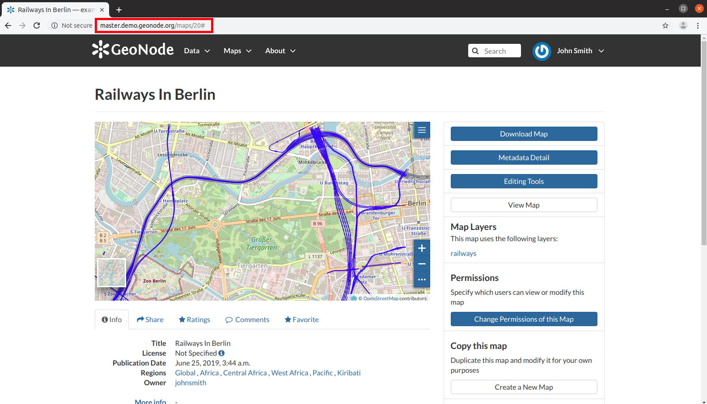

Publishing Data¶
Warning
In GAIR, resource according with permission can be published in order to share it with other people. Once a Map has been published you can embed it in your web pages, your blog or your web site.
An easy way to accomplish that is to use an iframe. See the following steps:
Open the Map Information page and copy the URL
The Map Infromation Page URL
Add “/embed” to the URL so that it will be like this “http://master.demo.geonode.org/maps/11/embed”
Use this URL inside an html
iframeassrcvalue<iframe style="border: none;" height="400" width="600" src="http://master.demo.geonode.org/maps/11/embed" ></iframe>
Put this html block of code inside your web pages to display the map.
Saving an html file with this code you can test your map on your pc, look at the following picture.
The Embedded Map
As you can see, some basic functionalities will be available to the user: the Table of Contents (TOC), the Basemap Switcher, the Sidebar Tools and the Options Menu Tools.